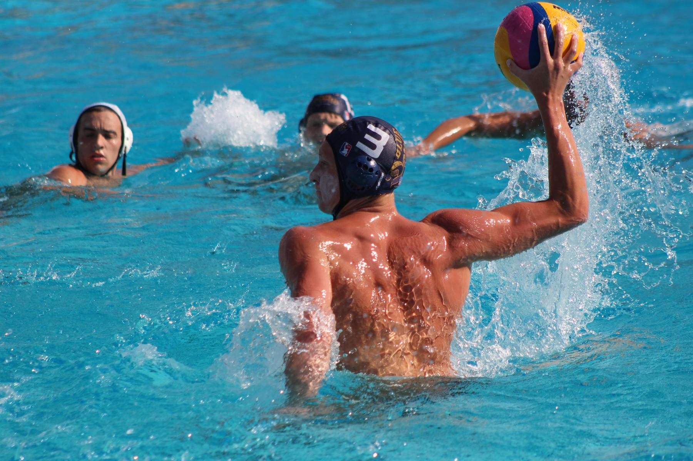
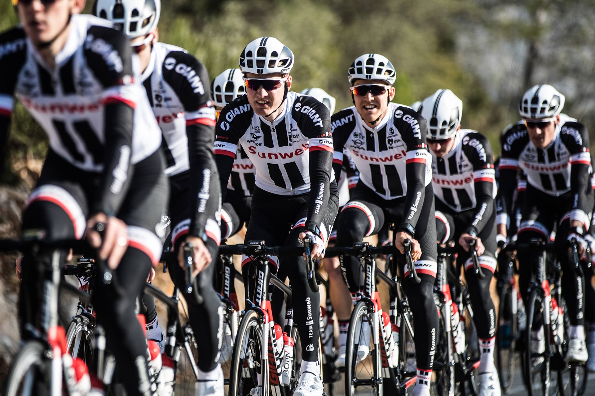
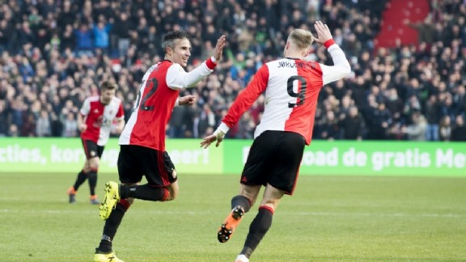

After a couple years of working I felt that I needed a change in my life. I was already playing a bit with coding and I made the decision that Coding is a field were is see myself working in every day!
see for yourself|  |
WaterpoloWaterpolo is my favorite sport. I play it myself and train 2 times a week and play a game in the weekend.I have been doing it for more thant 10 years. |
|  |
CyclingA couple of years ago I bought a racing bike. After that every summer i try to ride as much as possible. With friends or alone. I try to do minimal trips of 30k |
|  |
FootballI don't play Football myself but I love to watch it. Mostly every sunday I will watch a game of my favourite team. Can you guess?? |
This page is about me Frank. I made it during the first day of front-end, during the LeWagon Coding Bootcamp